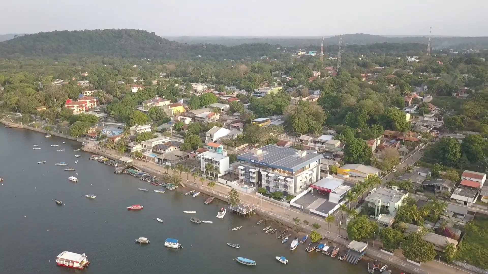

ALTER DO CHÃO, PARÁ
Explore Alter do Chão
Destinos
Carregando destinos…
Nenhum lugar encontrado. Tente outro nome.
Mapa
Mapa indisponível no momento.

Carregando destinos…
Nenhum lugar encontrado. Tente outro nome.
Mapa indisponível no momento.